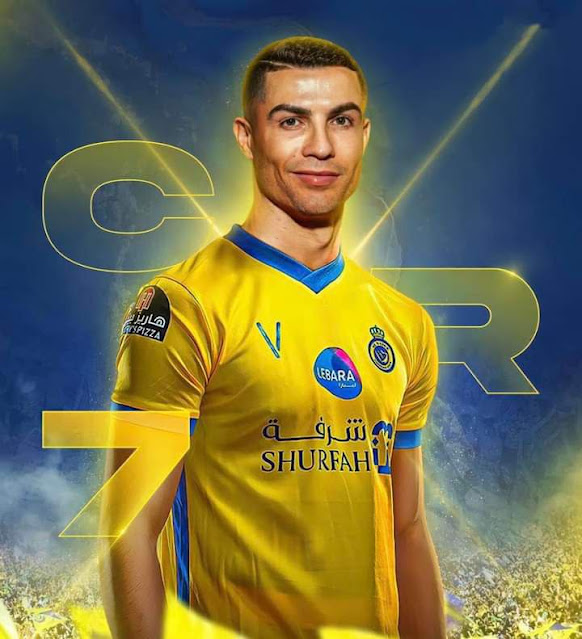

MY MENTOR

Cristiano Ronaldo dos Santos Aveiro is a Portuguese professional footballer who plays as a forward for Saudi
Professional League club Al Nassr and captains the Portugal national team.
Widely regarded as one of the
greatest
players of all time, Ronaldo has won five Ballon d'Or awards and four European Golden Shoes, the most by a
European
player. He has won 32 trophies in his career, including seven league titles, five UEFA Champions Leagues,
the UEFA
European Championship and the UEFA Nations League.
Ronaldo was born on 5 February 1985 in Funchal, Madeira, Portugal. He began his professional career at
Sporting CP,
where he won the Portuguese Cup in 2002. In 2003, he signed for Manchester United for a then-world record
fee of £12
million. He won three Premier League titles, one FA Cup, and one UEFA Champions League during his time at
United. In
2009, he transferred to Real Madrid for a world-record fee of €94 million. He won two La Liga titles, four
UEFA
Champions League titles, and two Copa del Rey titles during his time at Real Madrid. In 2018, he signed for
Juventus for
a fee of €100 million. He won two Serie A titles and two Coppa Italia titles during his time at
Juventus.
Ronaldo has also been very successful at international level. He has won the UEFA European Championship with
Portugal in
2016 and the UEFA Nations League in 2019. He is Portugal's all-time leading scorer with 117 goals in 189
appearances.
Ronaldo is known for his incredible talent and skills on the football field. He is an excellent goalscorer,
with a
powerful shot and a great ability to finish. He is also a very good dribbler, with the ability to beat
defenders with
his speed and agility. Ronaldo is also a very hard worker and is known for his dedication to his fitness.
Ronaldo is one of the most popular athletes in the world. He has over 400 million followers on social media.
He is also
a very successful businessman, with his own clothing line and a number of endorsement deals.
Ronaldo is a true legend of the game and is considered by many to be the greatest footballer of all time. He
is an
inspiration to millions of people around the world and his story is one of determination, hard work, and
success.
Here are some of Ronaldo's most notable achievements
- Five Ballon d'Or awards (2008, 2013, 2014, 2016, 2017)
- Four European Golden Shoes (2008, 2011, 2014, 2015)
- Seven league titles (Premier League, La Liga, Serie A)
- Five UEFA Champions League titles
- UEFA European Championship winner (2016)
- UEFA Nations League winner (2019)
- All-time leading scorer for Portugal (117 goals)
Ronaldo is a true icon of the game and his legacy will continue to inspire generations to come.
Conclusion
Cristiano Ronaldo is one of the greatest footballers of all time. He is a prolific goalscorer, an athletic
dribbler, and
a powerful shooter. He is also a hard worker and is dedicated to fitness. Ronaldo is an inspiration to
millions of
people around the world and is a role model for young athletes.